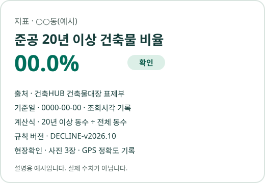

…종
자료 모으기
지표 값을 만든 공공 출처 수입니다.
경계·참고 자료까지 모은 전체 목록은 데이터 출처에 있습니다.
리뉴맵은 도시재생·정비 용역사와 지자체 담당자가 공개 자료와 현장 기록을 출처와 기준일이 붙은 근거 문서로 정리하는 도구입니다.
지금 나오는 결과는 참고 계산입니다.
법정 판정 규칙을 리뉴맵 담당자가 조문과 대조해 승인하기 전이라 "참고 계산"으로 표기해 쓰고, 판정과 승인은 담당 기관이 합니다.
현장 기록에서 문서까지 · 숫자를 다루는 약속 · 하지 않는 일 · 출처·계산식 상세 · 규칙별 승인 상태를 주제별로 살펴보세요.
출처, 기준일, 계산식, 현장 확인 여부가 숫자 하나에 함께 묶여 있습니다.
"노후 건축물 50% 이상"처럼 조건을 고르면 해당하는 동이 지도에 남습니다.
조건을 더할수록 모두 맞는 곳만 추려집니다.
지도에서 고른 동의 숫자와 출처를 읽기 쉬운 문장으로 옮깁니다.
브라우저 인쇄로 바로 PDF가 됩니다.
무료이고 로그인도 없습니다.
건축물대장을 따로 모은 법정동 한 곳의 쇠퇴 3요건 값을 법정 기준선 옆에 놓았습니다.
인구·사업체 통계는 행정동 단위라 법정동 값이 없어 '추가확인'으로 남습니다. 같은 지역의 행정동(예: 반여1동) 화면에서는 인구·사업체 값까지 셉니다.
기관의 최종 판정이 아닙니다.
공모 접수 전 몇 주 동안 실무자가 되풀이하는 일들입니다.
아래 숫자는 리뉴맵이 이미 대신 모아 둔 양입니다.
…종
지표 값을 만든 공공 출처 수입니다.
경계·참고 자료까지 모은 전체 목록은 데이터 출처에 있습니다.
…곳
같은 기준으로 계산한 전국 읍·면·동 수입니다.
…가지
숫자 하나에 붙는 근거 항목 수입니다.
출처·기준일·계산식 등입니다.
현장 사진과 공공 통계를 한 장에 묶습니다.
숫자·출처·기준일과 확인이 필요한 항목을 함께 확인합니다.
사진을 찍으면 위치와 오차 범위(±m)가 함께 기록됩니다.
얼굴·번호판 자동 가리기는 보조 수단입니다.
저장 전에 놓친 곳을 직접 확인하고 가려 주세요.
위치를 확인해 행정동의 공공 통계를 연결합니다.
필지·조문 대조는 필요한 경우 별도로 확인합니다.
검토용 한글 1쪽과 PDF, 근거 표를 내려받습니다.
공식 통계와 현장 기록을 구분하고, 제출 전 담당자가 확인합니다.
따라가서 확인할 수 있어야 근거입니다.
같은 자료로 다시 만들면 같은 문서가 나옵니다.
빈칸을 추정으로 채우지 않습니다.
확인하지 못한 것은 범위와 이유로 보여 드립니다.
규칙 승인 대기와 자료 부족을 구분해 표시합니다.
출처·공간 단위·규칙 판본을 확인하고 담당자가 최종 검토합니다.
규칙별 원문·승인 상태를 확인하세요.
얼굴, 번호판, 건물 이름 속 개인 이름을 직접 확인하고 가려 주세요.
내보내기·공유나 설정된 팀 업로드를 선택하면 기록·사진을 전달할 수 있습니다.
지도·필지 조회에는 위치 정보가 외부 서비스로 전달됩니다.
처리 경로와 개인정보 안내를 확인하세요.
근거를 만드는 쪽이 거래로 돈을 벌지 않아야 그 근거를 믿을 수 있습니다.
값 뒤에 출처, 기준일, 계산식, 규칙 판본, 확인 상태가 줄지어 나옵니다.
자료가 모자란 칸은 비워 둔 채 이유를 적습니다.

가상 시나리오이며, 아직 고객 확인 전입니다.
자치구가 공모 후보 2~3개 동의 기초조사를 맡겼습니다.
접수까지 5주가 남은 상황입니다.
기초조사에 드는 시간은 실제 용역사 작업 일수를 잰 뒤에 싣습니다.
재기 전에는 숫자를 쓰지 않습니다.
전국 지도는 행정동 단위 공공 통계입니다.
이 사례는 부산 시범 수집 지역의 건축물대장을 한 동씩 모아 동수·연면적·세대 기준 노후율을 따로 계산했습니다.
숫자를 누르면 출처와 계산식이 열립니다.
도시재생활성화지역은 인구, 사업체, 노후건축물 세 요건 가운데 2개 이상을 갖춰야 지정할 수 있습니다(도시재생법 제13조 제4항).
인구 요건은 최근 30년 중 가장 많던 때보다 20% 이상 줄었거나, 최근 5년 중 3년 이상 연속으로 줄어든 경우입니다.
사업체 요건은 최근 10년 중 가장 많던 때보다 5% 이상 줄었거나, 최근 5년 중 3년 이상 연속으로 줄어든 경우입니다.
노후 요건은 준공 후 20년 이상 지난 건축물이 전체의 50% 이상인 경우입니다(시행령 제17조, 2025.10.1 개정).
리뉴맵에 동 이름을 넣으면 세 값을 출처·기준일과 함께 보여 줍니다.
판정이 아니며 최종 확인은 담당 기관이 합니다.
근거: 도시재생 활성화 및 지원에 관한 특별법 제13조 제4항, 같은 법 시행령 제17조, 행정동별 값 목록
노후건축물 비율은 그 동의 전체 건축물 중 준공(사용승인) 후 20년 이상 지난 건축물이 차지하는 비율입니다.
같은 동이라도 분모를 무엇으로 잡느냐(동수, 연면적, 세대)에 따라 값이 달라질 수 있습니다.
공식 쇠퇴진단지표는 국토교통부 도시재생 종합정보체계에서 CSV·OpenAPI로 받을 수 있습니다.
리뉴맵의 전국 행정동 값은 이 쇠퇴진단지표(읍면동)를 옮긴 것이며 기준일을 함께 적습니다.
부산 해운대구 정밀 사례에서는 건축물대장으로 동수·연면적·세대 기준을 따로 계산해 함께 보여 줍니다.
현장에서 사진을 찍으면 촬영 시각과 GPS 위치(오차 ±m)가 기록됩니다.
오차가 크면 지도에서 핀을 직접 옮길 수 있고, 옮긴 경우 '보정됨'으로 표시됩니다.
위치로 행정동을 찾는 작업은 이 기기 안에서 처리합니다.
그 동의 공공 통계를 출처·기준일과 함께 붙여 검토용 1쪽(HWPX·PDF)을 만듭니다.
기록과 가린 사진은 이 기기에 저장되며, 내보내기·공유나 설정된 팀 업로드는 사용자가 선택합니다.
지도·필지 조회에는 위치 정보가 외부 서비스로 전달됩니다.
도시재생전략계획을 세우거나 바꿀 때는 기초조사를 해야 하며, 이때 국토부 도시재생종합정보체계를 활용할 수 있습니다(도시재생법 제14조).
2027년 신규사업은 신청서를 2026년 12월 말에 접수합니다(평가 가이드라인 기준 12.28~12.30).
리뉴맵은 대상 동의 쇠퇴 3요건 값과 생활 지표를 출처가 붙은 한글 문서로 만들어 기초조사 초안 작성을 돕습니다.
근거: 도시재생 활성화 및 지원에 관한 특별법 제14조, 국토교통부 「2027년 도시재생 신규사업 평가 가이드라인」(2026.9.11) 22쪽, 국토연구원 게시
건축물대장, 주민등록 인구, 도시재생종합정보체계 쇠퇴진단지표 등 공공데이터를 씁니다.
숫자마다 출처, 조회시각, 기준일을 함께 기록합니다.
리뉴맵은 공공 시스템을 대신하지 않고 그 자료를 이어 씁니다.
도시재생종합정보체계 쇠퇴진단지표를 그대로 가져와 건축물대장, 주민등록 인구, 생활 시설 자료와 잇고, 숫자마다 출처와 기준일을 붙여 문서로 만듭니다.
공식 값은 원천 시스템의 값이 기준입니다. 자료별 갱신 주기는 데이터 출처에 있습니다.
판정 규칙은 사람이 조문을 보고 작성·승인해야 합니다.
현재 공개 결과는 규칙 승인 전 검토용 참고 자료이며 법정 판정·기관 승인을 대신하지 않습니다.
근거 조문과 규칙 버전, 승인 대기 상태를 함께 확인하세요.
자료가 부족하면 '충족'으로 만들지 않고 '추가확인'으로 표시합니다.
납품본은 기준일을 고정한 스냅샷으로 남습니다.
같은 스냅샷으로 다시 계산하면 같은 값이 나옵니다.
새 기준일과의 차이는 따로 보여 드립니다.
얼굴과 차량번호를 가린 뒤 저장하는 것을 전제로 설계합니다.
소유자 개인정보는 저장하지 않습니다.
공개 도구에서 행정동 자동 초안을 HWPX, PDF, 엑셀로 받을 수 있습니다.
공모 서식에 맞춘 시범 과업은 대상 동·기준일·산출물·검수·보완 범위를 계약 전에 협의합니다.
현재 산출물은 규칙 승인 전 검토용 참고 자료입니다.
아닙니다.
도시재생, 노후 주거지 정비, 빈 창고·공장 다시 쓰기처럼 동네를 새로 고치는 일 전반에 씁니다.
어느 일이든 그 동네의 공공데이터 값을 출처·기준일과 함께 모아 근거 문서로 만드는 데서 시작합니다.
휴대폰으로 사진을 찍으면 위치를 받아 가까운 행정동을 찾고, 그 동의 공식 현황을 출처와 함께 붙여 1쪽 문서로 만듭니다.
위치가 틀리면 지도에서 옮길 수 있고, 옮긴 위치는 '보정됨'으로 남습니다.
기록과 가린 사진은 이 기기에 저장됩니다.
내보내기·공유나 설정된 팀 업로드는 사용자가 선택하며, 필지 조회에는 좌표가 외부 서비스로 전달됩니다.
대상 동의 쇠퇴 3요건 값과 생활 지표를 출처·기준일이 붙은 문서로 받아 기초조사 초안에 씁니다.
2027년 도시재생 신규사업 신청서 제출기한은 2026년 12월 28일~30일입니다(국토교통부 「2027년 도시재생 신규사업 평가 가이드라인」 22쪽).
도시재생·정비 용역사와 지자체 담당자를 위한 유료 파일럿을 제안합니다.
준비 중인 공모·용역과 보유 자료를 알려 주세요.
시범 제안가 99만원(VAT 별도)
과업 1건, 행정동 1곳을 기준으로 하며 최종 금액은 계약 전에 확정합니다.